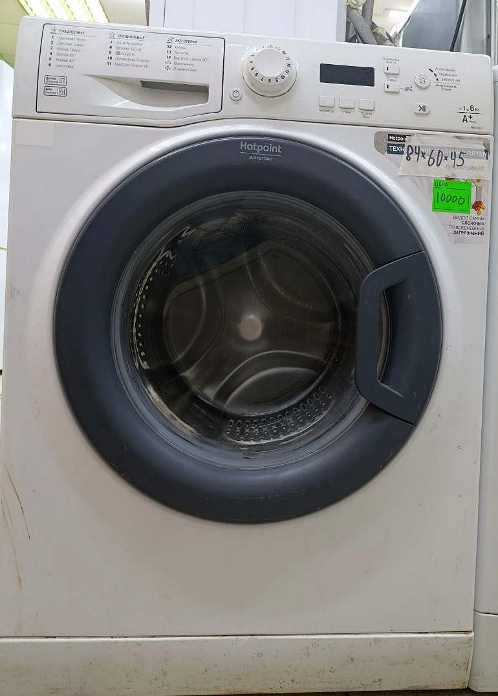
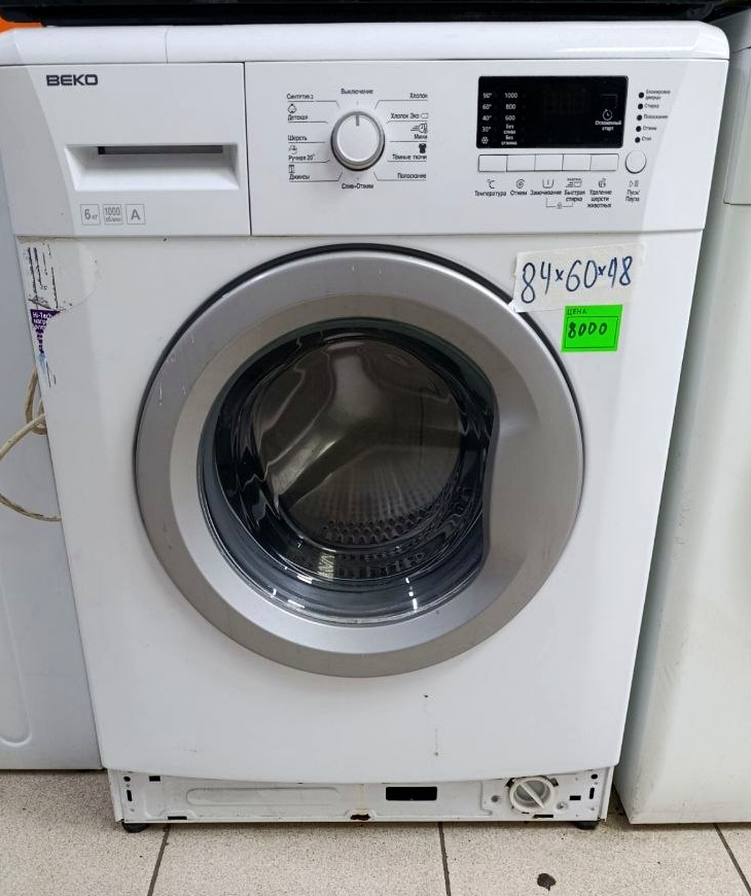
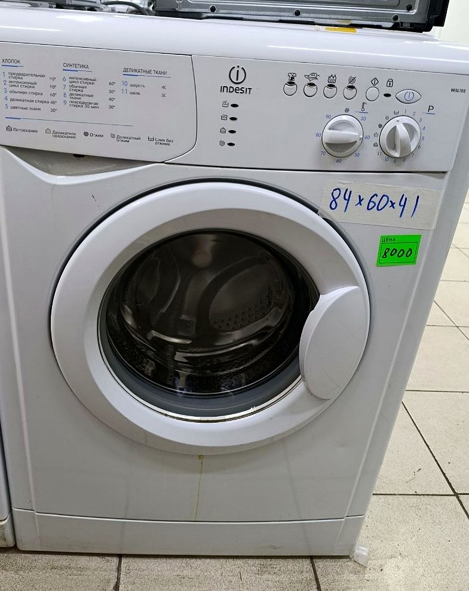
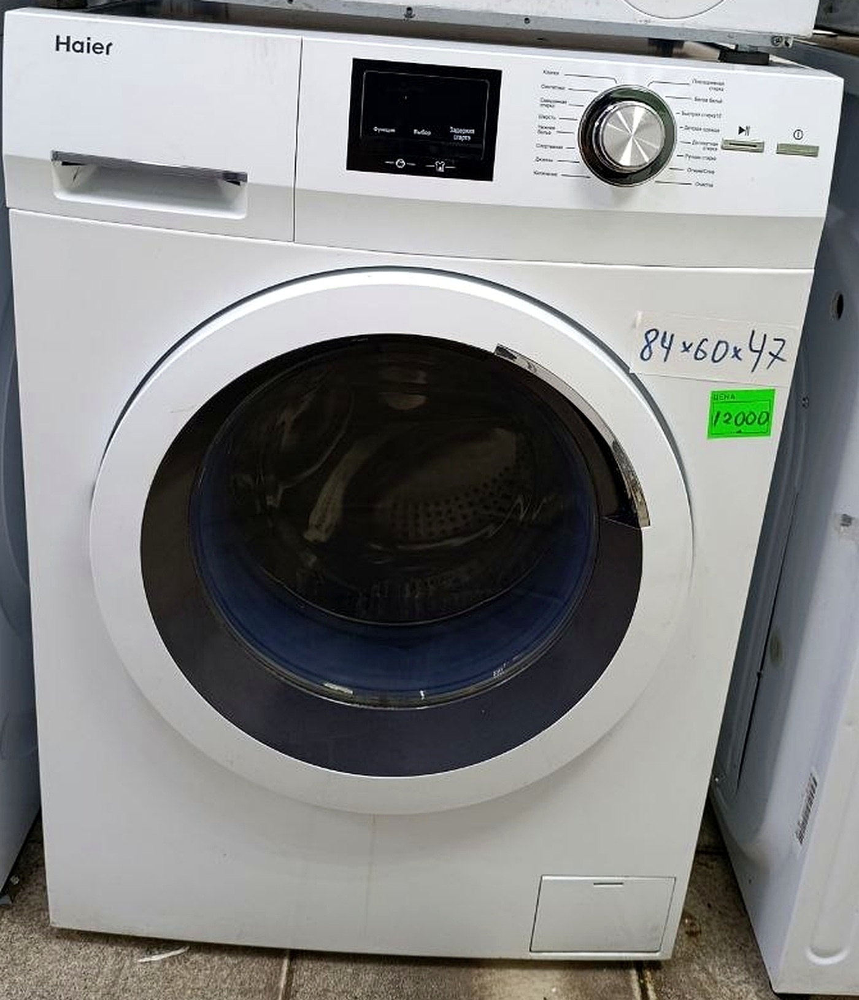
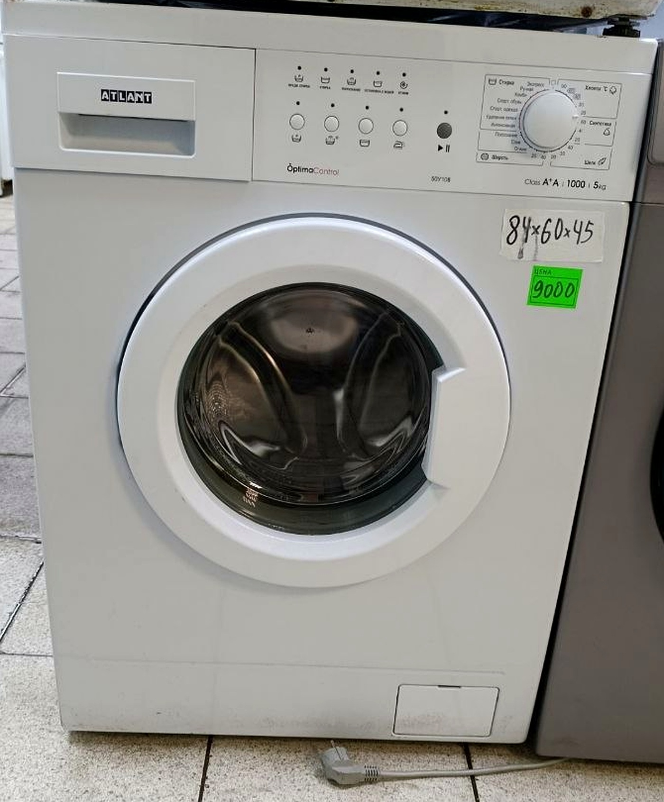

Б/у техника · проверена
Hotpoint — 6 кг
6 кг · 1000 об/мин · глубина 45 см
Стиральная машина Hotpoint с загрузкой до 6 кг и отжимом до 1000 об/мин.
10 000 ₽Гарантия 3 месяца
Посмотрите стиральные машины с фотографиями, ценами и основными характеристиками: загрузка, размеры и максимальный отжим. Наличие и доставку можно уточнить в Telegram до покупки.
5 моделей в каталоге; актуальное наличие можно уточнить перед покупкой.

Б/у техника · проверена
6 кг · 1000 об/мин · глубина 45 см
Стиральная машина Hotpoint с загрузкой до 6 кг и отжимом до 1000 об/мин.

Б/у техника · проверена
6 кг · 1000 об/мин · 84×60×48 см
Стиральная машина Beko на 6 кг. Есть отдельная страница с характеристиками и фотографией.

Б/у техника · проверена
5 кг · 1000 об/мин · глубина 41 см
Компактная стиральная машина Indesit WISL 102 с загрузкой 5 кг и глубиной 41 см.

Б/у техника · проверена
6 кг · 1000 об/мин · глубина 47 см
Стиральная машина Haier с загрузкой 6 кг. Полные размеры смотрите на странице товара.

Б/у техника · проверена
5 кг · 1000 об/мин · OptimaControl
Стиральная машина ATLANT 50У108 с загрузкой 5 кг и управлением OptimaControl.
На технику предоставляется гарантия 3 месяца. Перед покупкой уточните наличие и стоимость доставки по своему адресу. Условия доставки и подъёма приведены в общем каталоге.